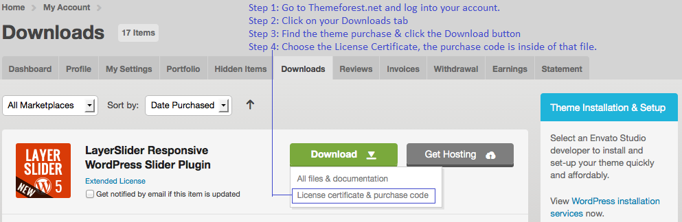
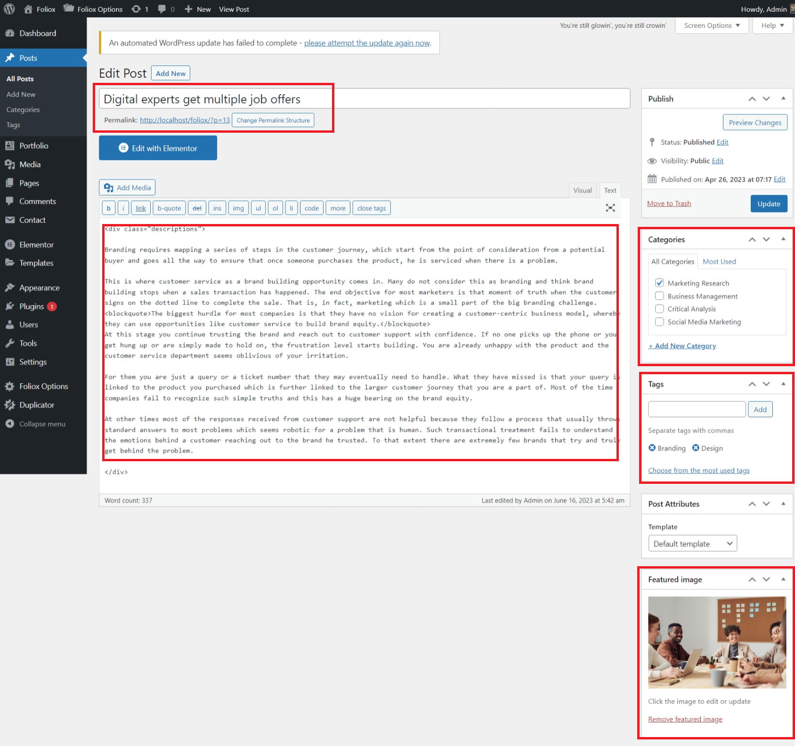
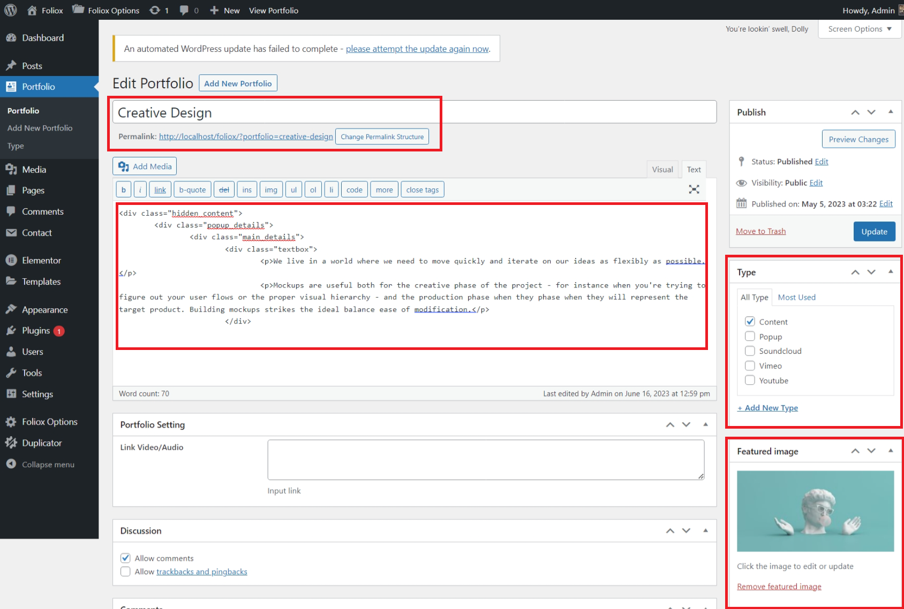

To install this theme you must have a working version of WordPress already installed. If you need help installing WordPress, follow the instructions in WordPress Codex or you can watch the Instructional Video created by Woo Themes. Below are all the useful links for WordPress information.
To use Foliox, you must be running WordPress 3.1 or higher, PHP5 or higher, and mysql 5 or higher. We have tested it with Mac, Windows and Linux. Below are a list of items you should ensure your host can comply with.
- Check to ensure that your web host has the minimum requirements to run WordPress.
- Always make sure they are running the latest version of WordPress
- You can download the latest release of WordPress from official WordPress website
- Always create secure passwords FTP and Database
Hosting is Foliox secure when PHP applications, like WordPress, are run using your account’s username instead of the server’s default shared username (www or www-data). The most common way for hosting companies to do this is using suPHP. Just ask your potential host if they run suPHP or something similar.
We recommend using WpEngine.com or
A Small Orange for all your hosting needs.
When you purchase our theme from Themeforest, you need to download the Foliox files from your Themeforest account. Navigate to your downloads tab on Themeforest and find Foliox. Click the download button to see the two options. The Main Files contain everything, the Installable WordPress Theme is just the installable WordPress theme file. Below is a full list of everything that is included when you download the main files, along with a brief description of each item.
- Foliox Theme Folder – contains the Foliox.zip and Foliox-Child-Theme.zip wordpress theme. The child theme is only for users who make code changes.
All of our items come with free support, and we have a dedicated mail: shthemewp@gmail.com to handle your requests. Support is limited to questions regarding the theme’s features or problems with the theme. We are not able to provide support for code customizations or third-party plugins. If you need help with anything other than minor customizations of your theme then you should enlist the help of a developer.
You can install the theme in two ways: through WordPress, or via FTP. The Foliox.zip file is the Installable WordPress Theme and what you need to use to get the theme installed. Please see the following sections for each method and watch our video tutorial on how to install Foliox. But first, you need to download the Foliox files from your Themeforest account. Navigate to your downloads tab on Themeforest and find Foliox. Click the download button to see the two options. The Main Files and the Installable WordPress Theme. See below.

Downloading The Main Files Gives You All The Content Listed Below
- Foliox Theme Folder – contains the Foliox.zip and Foliox-child.zip wordpress theme. The child theme is only for users who make code changes.
Downloading The Installalable WordPress Theme Only Gives You The Foliox.zip File
- Foliox.zip – this is the parent wordpress theme, install this via WordPress. If you install it via FTP then unzip it first and use the extracted folder.
Follow the steps below to install via WordPress.
Step 1 – Navigate to Appearance > Themes.
Step 2 – Click Install Themes and hit the upload button.
Step 3 – Navigate to find the “Foliox.zip” file on your computer and click “Install Now”
Step 4 – Wait while the theme is uploaded and installed.
Step 5 – Activate the newly installed theme. Go to Appearance > Themes and activate it.
Step 6 – Then you will get a notification to activate the required plugins: Elementor and Contact Form 7. Follow the steps to instal and activate. The other plugins we include are integrated into the theme and all will be ready to use when you right away.
Common Install Error: Are You Sure You Want To Do This?
If you get the “Are You Sure You Want To Do This” message when installing Foliox.zip file via WordPress, it means you have an upload file size limit. Install the theme via FTP if this happens, or call your hosting company and ask them to increase the limit.
Setting up your home page and blog page is the same as setting up any other regular pages except that you need to specify in the settings which page will be your main home page. More includes several pre-designed home page options. Any of the layout options you see on our demo can be imported through our demo content importer, or from copying the individual page content from our docs in the “How To Import Individual Pages” section. However, you are not stuck with our pre-designed layouts, you can build any type of home page you desire using our Page Builder elements. You can mix and match anyway you like.
To Set Your Home Page - Blog Page, Follow These Steps
Step 1 – Navigate to Settings > Reading.
Step 2 – Select “A Static Page” option.
Step 3 – Choose the page you want as your home page from the dropdown list.
Step 4 – This is also the same spot you select the Blog page as the post page.
No matter which method or methods you use to display your blog posts, the first thing you need to do is create the blog posts. More offers several blog post types, image, image slideshows, video and more on the way. Each blog post you make will be able to be displayed using any of the 3 methods described above. And with the ability to assign custom categories to each post, you can easily display a set of posts based on category. See below for information on how to create blog posts.
Follow the Steps Below To Create A Blog Post
Step 1 – Navigate to Posts in your WordPress admin.
Step 2 – Click on Add New to make a new post. Create a title and insert your post content in the editing field. You can use any of our short code builder elements inside the post.
Step 3 – Add Categories from the right side. To assign it to the post, check the box next to the Category name.
Step 4 – Add Tags from the right side. Type the name of the tag in the field, separate multiple tags with commas.
Step 5 – For a single image, click the first Featured Image Box, select an image and click “Set Featured Image”.
Step 6 – Once you are finished, click Publish to save the post.
Here Is A Screenshot That Shows The Various Areas Of The Blog Post Page Described Above.

After you have made your Portfolios page, you need to create Portfolio posts so they will show up on the Portfolios pages
Follow the Steps Below To Create A Portfolio Post
Step 1 – Navigate to Portfolio in your WordPress admin.
Step 2 – Click on Add New Portfolio to make a new Portfolio post. Create a title and insert your Portfolio content in the editing field.. You can use any of our short code builder elements inside the post.
Step 3 – Choose Type from the right side.
Step 4 – For a single image, click the first Featured Image Box, select an image and click “Set Featured Image”.
Step 5 – Once you are finished, click Publish to save the post.
Here Is A Screenshot That Shows The Various Areas Of The Portfolio Post Described Above.


{kind=link}
{kind=link}
{kind=link}
{kind=link}
{kind=link}
{kind=link}
{kind=link}
{kind=link}
{kind=link}
{kind=link}
{kind=link}
{kind=link}
{kind=link}
{kind=link}